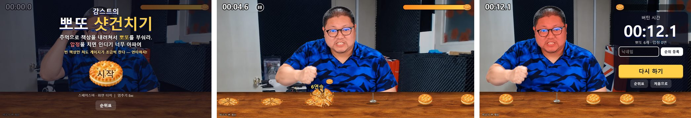
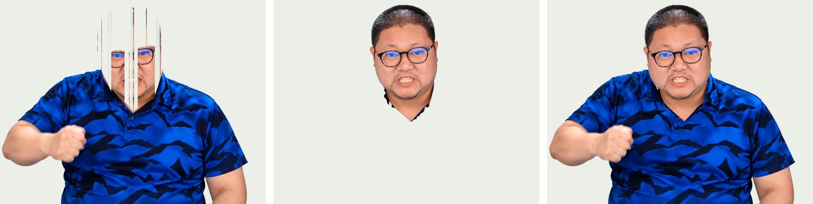
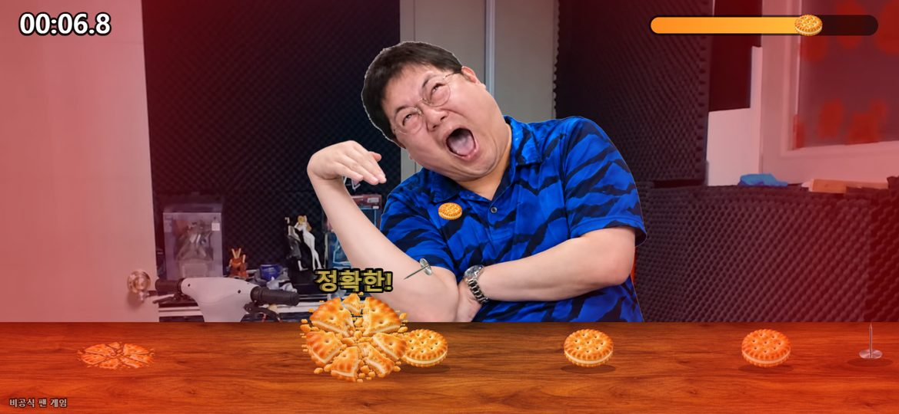
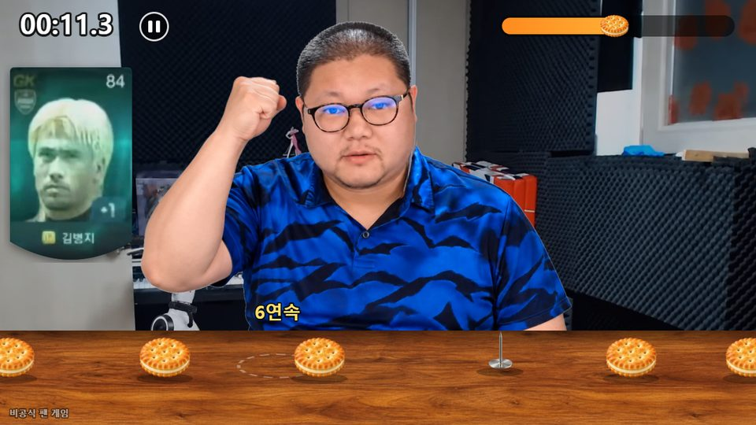
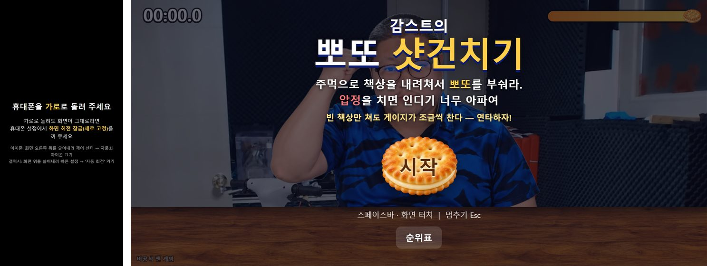

감스트가 책상 앞에 앉아 있고, 책상 위로 뽀또와 거꾸로 선 압정이 오른쪽에서 왼쪽으로 흘러온다. 화면을 누르면 주먹으로 책상을 쾅 내려친다(방송에서 말하는 "샷건치기"). 뽀또를 부수면 뽀또 게이지가 차고, 압정을 치면 "호에에~" 하며 손을 붙잡고 게이지가 크게 깎인다. 게이지는 가만히 있어도 계속 닳고, 0 이 되면 끝이다. 점수는 버틴 시간이다.
비공식 팬 게임이다. 전동 스쿠터처럼 주소를 목록에 올리지 않고, 릴스에 댓글 단 사람에게만 DM 으로 보낸다. 10월 30일부터 11월 3일까지 닷새 걸렸다. 이번엔 3D 가 아니라 사진 같은 그림 몇 장을 갈아 끼우는 2D 게임이고, 처음으로 조작할 수 없는 순위표를 붙였다.

한눈에 보는 구조
게임은 전부 방문자의 브라우저에서 돈다. 서버가 하는 일은 둘이다. 파일 2.3MB 를 건네주는 정적 호스팅(Cloudflare Pages), 그리고 순위표를 지키는 검증 서버(Fly.io 의 bamti-bomb). 검증 서버는 Bamti Bomb 때 띄운 것을 같이 쓴다. 새로 띄운 서버는 없다.
← 옆으로 밀어 보기 →
무엇을 왜 골랐나
| 자리 | 고른 것 | 이유 |
|---|---|---|
| 그리기 | Canvas 2D + 순수 JS, 빌드 없음 | 그림을 겹쳐 그리고 흔들기만 하면 된다. 3D 엔진은 필요 없었다 |
| 캐릭터 | AI 로 만든 사진 같은 그림 14장 | 내려치기 4장, 표정 5장, 호에에 5장. 움직임은 그림을 갈아 끼우고 코드로 흔들어 만든다 |
| 그림 손질 | Python + OpenCV · PIL | 흰 배경 지우기, 머리 위치 맞추기, 원래 머리 지우기를 한 번에. 그림을 다시 받으면 스크립트 하나만 다시 돌린다 |
| 판정 | sim.js — 1/60초 틱, 시드 난수, 사칙연산만 | 같은 입력이면 어느 컴퓨터에서 돌려도 똑같은 판이 나와야 서버가 다시 돌려 볼 수 있다 |
| 순위표 | 점수 대신 입력을 받아 서버가 다시 돌림 | 점수를 보내면 고쳐 보낼 수 있다. 전에 순위표에 기록을 조작해 올린 사람이 있었다 |
| 소리 | Web Audio, 방송 영상에서 자른 mp3 8개 | 아이폰은 누르지 않은 순간의 <audio> 를 막는다(스쿠터 때 배움). 처음부터 Web Audio 로 |
| 카드 연출 | <video> 를 캔버스에 그리기 | 영상을 그림 장으로 풀면 수 MB. 2초짜리 mp4 는 90KB 다 |
| 배포 · 링크 | Cloudflare Pages 숨은 주소 + 리틀리 DM | 스쿠터에서 그대로. 댓글이 곧 링크 요청이고, 팔로우까지 한 번에 |
Canvas 2D — 브라우저의 그림판 기능. 매 프레임 그림을 지우고 순서대로 다시 그린다. 그린 순서가 곧 앞뒤 순서다.
결정론적(deterministic) — 같은 입력을 넣으면 언제 어디서 돌려도 결과가 한 치도 다르지 않은 성질. 게임 리플레이와 서버 검증이 여기에 기댄다.
틱(tick) — 게임 세계의 시간 단위. 화면이 1초에 몇 번 그려지든 판정은 1/60초씩 끊어서 센다.
| 파일 | 줄 수 | 하는 일 |
|---|---|---|
game/js/game.js | 863 | 그리기 · 입력 · 소리 · 카드 영상 · 세레모니 · 순위표 화면 |
game/js/sim.js | 195 | 판정만. 화면·소리 없음. 서버에도 똑같이 복사된다 |
server/shotgun.js | 101 | 판 열기, 다시 돌려 검증, 순위표에 넣기 |
tools/*.py | 363 | 그림 손질 · 소리 자르기 · 카드 자르기 · 배포 복사 · 서버로 복사 |
test/*.js | 81 | 봇으로 난이도 재기, 다시 돌리기 일치, 서버 조작 방지 |
그림 몇 장으로 사람 움직이기
캐릭터는 AI 로 만든 사진풍 그림이다. 기본 자세(무표정)를 포함한 표정 다섯, 내려치기 네 단계, 호에에(압정에 찔려 손목을 붙잡고 비명) 다섯 장을 흰 배경으로 받았다. 일부러 날마다 다른 방송 모습으로 만들었다. 호에에는 머리를 덮고 금테 안경을 쓴 다른 날 모습인데, 그게 맞는 장면이라 그대로 뒀다. 문제는 이걸 한 사람처럼 이어 붙이는 일이었다.
팔만 떼어 붙이려다 그림을 통째로
처음 생각은 몸은 하나로 두고 팔만 바꿔 끼우는 것이었다. 팔만 오려서 붙여 보니 어깨에 이음새가 보였다. AI 가 그림마다 셔츠 무늬를 새로 그려서, 같은 셔츠인데 줄무늬 위치가 장마다 다르다.
왼쪽 반만 잘라 붙이는 것도 해 봤는데, 네 번째 그림에서 주먹이 자르는 선에 걸려 잘렸다.
결국 내려치기 네 장을 몸통째로 갈아 끼우기로 했다. 그림끼리 몸 위치가 조금씩 어긋나는 건 기본 자세(1528×1029) 좌표에 맞춰 두고, 장마다 어디에 놓을지는 manifest.json 에 적었다.
표정은 얼굴이 아니라 머리를 통째로

표정은 연타할수록 무표정 → 말하는 얼굴 → 이를 악문 얼굴로 바뀐다. 다섯 장 중 입을 쩍 벌린 것과 찡그린 것은 해 보니 어울리지 않아 뺐다. 처음엔 표정 그림에서 얼굴 타원만 오려 덮었는데, 경계에서 붙인 티가 났다. 얼굴 위치는 어차피 같으니, 머리카락·귀·목까지 머리를 통째로 오려서 덮었다.
- 머리 위치 맞추기. 그림마다 머리가 몇 픽셀씩 다른 자리에 있다. OpenCV 의 SIFT 로 표정 그림과 내려치기 그림에서 같은 점들을 찾아 짝짓고, 어긋난 만큼 옮겼다.
- 머리 오리기. 셔츠가 파랗다는 걸 썼다. "파랗지 않은 덩어리 중 위쪽"이 머리다. 파란색 기준이 느슨하면 어두운 그림자가 셔츠로 잘못 잡혀 경계가 어긋났다. 파랑이 빨강보다 12 넘게 크고 초록 이상일 때만 셔츠로 쳤다.
- 원래 머리 지우기. 덮은 머리가 원래 머리보다 조금이라도 작으면 옆으로 원래 머리가 삐져나왔다. 빌드할 때 내려치기 그림의 원래 머리를 지웠다(
drop_head). - 지우면 생기는 틈. 지웠더니 이번엔 목과 깃 사이에 배경이 틈처럼 보였다. 셔츠 윗선보다 15px 아래는 지우지 않고, 덮는 머리로도 안 가려지는 막힌 구멍은 원래대로 되살렸다.
그리는 순서: 팔만 한 번 더
← 옆으로 밀어 보기 →
흔들림은 영상에서 재서
처음엔 칠 때 얼굴 떨림이 너무 작았다. 실제 방송 영상에서 한 번 칠 때 머리가 머리 폭의 8% 쯤 움직이는 걸 재서 맞췄다. 화면 전체를 흔들면 뽀또가 안 보여서 게임이 안 되니, 사람만 따로 좌우 10~18px, 아래로 14px, 살짝 기울게 휙 흔든다. 화면 흔들림은 작게 남겼다. 연타할수록 얼굴이 빨개지는데, 처음엔 머리 그림 전체를 붉게 물들였더니 안경과 머리카락까지 빨개졌다. 피부색인 곳에만, 턱 아래로 갈수록 옅게 칠한다.
SIFT — 그림에서 크기·회전이 바뀌어도 알아볼 수 있는 특징점을 찾는 알고리즘. 두 그림에서 같은 점을 짝지어 얼마나 어긋났는지 계산한다.
마스크 — 그림에서 어디를 남기고 어디를 지울지 칸마다 적은 흑백 판. 머리 마스크, 셔츠 마스크, 피부 마스크를 따로 만들어 썼다.
판정 — 누른 순간이 아니라 닿는 순간
판정 원(주먹이 떨어지는 곳)은 x=470 에 고정이고, 책상이 흘러온다. 가장 오래 고친 게 여기다. 해 보니 일찍 치면 안 맞고, 좀 늦게 치면 맞았다. 양쪽 균형이 안 맞았다.
← 옆으로 밀어 보기 →
원인은 판정 시각이었다. 처음엔 누른 순간 판정 원 안에 있던 것을 맞혔다. 그런데 주먹은 4틱(0.067초) 뒤에 닿고, 그동안 책상은 왼쪽으로 흘러간다. 눈은 주먹이 닿는 순간을 보고 맞았는지 판단하는데 판정은 그보다 0.067초 앞선 자리로 했으니, 늦게 쳐야 맞는 쪽으로 치우쳤다. 판정을 주먹이 닿는 순간 화면에 보이는 자리로 옮겼다. 그 김에 뽀또 폭은 넉넉하게(±85px) 넓혔다.
압정은 반대로 했다. 처음엔 압정도 판정 원 안에 들어와야 맞았다. 그러면 주먹 끝이 압정에 걸쳤는데도 안 아프다. 주먹과 압정 모양이 조금이라도 겹치면 맞는 걸로 바꿨다. 둘이 같이 걸치면 압정이 먼저다. 뽀또 옆에 있는 압정을 운 좋게 피해 가는 일은 없다.
입력 지연과 판정 — 리듬 게임에서 흔한 문제. 누른 순간과 결과가 보이는 순간 사이에 시간이 있으면, 판정은 사람이 "맞았다"고 느끼는 순간에 맞춰야 한다.
난이도는 봇한테 먼저 시켰다

시간이 갈수록 책상이 빨라지고(초당 380px → 최대 1000px), 게이지가 더 빨리 닳고(초당 7 → 계속 증가), 압정이 많아진다(18% → 최대 50%).
게이지 닳는 속도에는 끝이 없어서 완벽하게 쳐도 언젠가는 죽는다. 순위표 점수에 천장이 생긴다.
숫자를 바꿀 때마다 내가 해 보기 전에 봇 다섯 종류에게 먼저 시켰다(test/sim.test.js).
| 봇 | 어떻게 치나 | 버틴 시간 (시드 4개) |
|---|---|---|
| 완벽 | 뽀또만 정가운데에서 | 202 ~ 220초 |
| 사람 ±60ms | 뽀또를 노리되 타이밍이 흔들림 | 89 ~ 117초 |
| 사람 ±100ms | 더 많이 흔들림 | 92 ~ 107초 |
| 연타만 | 아무 생각 없이 초당 10번 | 15 ~ 60초 |
| 연타 + 압정 피하기 | 압정 올 때만 쉬고 나머지는 연타 | 242 ~ 254초 |
| 가만히 | 안 친다 | 13초 |
그리고 해 보면서 바꾼 것들:
- 압정은 두 번 연달아 안 나온다. 운 나쁘면 압정이 줄지어 나와서 한동안 뽀또가 없었다. 게이지가 닳는 게임에서 먹을 게 안 나오면 억울하다.
- 호에에 동안은 게이지가 안 닳는다. 처음엔 압정 값이 깎이고, 못 치는 1.5초 동안 또 닳아서 두 번 벌 받는 느낌이었다. 깎는 값을 한 번에 35 로 키우고, 그동안은 멈췄다.
- 빈 책상만 쳐도 +0.7. 뽀또 하나(+10)의 7%. 연타하면 조금씩 찬다. 대신 위 표처럼 "연타 + 압정 피하기"가 완벽하게 치는 것보다 오래 산다. 정확히 치는 재미와 미친 듯이 연타하는 재미 중 연타 쪽에 손을 들어 줬다. 방송 속 샷건이 원래 그렇다.
- 부스러기는 남는다. 부순 뽀또가 사라지지 않고 부스러기로 책상에 붙어 같이 흘러간다. 연타로 지나온 길이 보인다.
순위표 — 점수 대신 입력을 보낸다
보통 순위표는 브라우저가 "나 125초 버텼어"를 보내고 서버가 믿는다. 개발자 도구를 열면 누구나 9999초를 보낼 수 있다. 이번엔 브라우저가 점수를 보내지 않는다. "몇 번째 틱에 내려쳤나" 목록만 보내고, 서버가 같은 판정 코드로 판을 처음부터 다시 돌려서 버틴 시간을 직접 센다.
← 옆으로 밀어 보기 →
같은 판이 나오게 하는 세 가지 규칙
서버의 Node.js 와 폰의 사파리가 같은 틱 목록으로 한 틱도 다르지 않은 판을 만들어야 한다. 하나라도 어긋나면 정직하게 친 사람이 mismatch 로 거절당한다.
- 시간은 틱으로만. 화면이 30프레임이든 120프레임이든 판정은 1/60초씩 끊어서 돈다. 화면 쪽 시계(
requestAnimationFrame)는 틱을 몇 번 돌릴지만 정한다. - 난수는 시드로.
Math.random()은 쓰지 않는다. 시드 하나로 늘 같은 순서의 수를 내는 작은 난수기(mulberry32)를 판정 코드 안에 넣었다. 뽀또·압정 자리가 전부 여기서 나온다. - 사칙연산만.
Math.sin같은 함수는 브라우저마다 소수 끝자리가 다를 수 있다. 판정 코드에선 더하기·곱하기·비교만 쓴다. 흔들림처럼 판정과 상관없는 건 game.js 에서 마음대로 쓴다.
판정 코드는 sim.js 한 파일이다. 브라우저에선 그대로 불러 쓰고, 서버로는 sync_sim.py 가 복사한다. 규칙을 바꿀 때마다 VERSION 을 올렸다(닷새 동안 1 → 6).
버전이 다르면 서버가 거절하니, 옛 화면을 띄워 둔 사람이 새 규칙의 순위표에 섞이지 않는다.
배포하고 나서 실제 서버에 조작을 직접 해 봤다. 판을 열자마자 점수를 보내면 too_fast, 틱 수를 부풀리면 mismatch, 옛 버전이면 old_version 으로 다 거절됐다.
점수를 직접 넣던 예전 주소(/api/scores/shotgun 에 POST)는 막았다.
막지 못하는 것도 적어 둔다. 시드를 받아 완벽한 입력을 미리 계산해 두고, 실제 시간만큼 기다렸다가 보내는 봇이다. 그래도 게이지가 끝없이 빨리 닳으니 점수가 끝없이 오르지는 않는다.
시드(seed) — 난수기에 처음 넣는 숫자. 같은 시드면 같은 수열이 나온다. 맵이 시드로만 만들어지니, 서버는 시드만 알면 그 판의 맵을 안다.
리플레이 검증 — 결과 대신 입력을 받아 서버가 직접 재생해 보는 방식. 대전 게임과 스피드런 기록 검증에서 쓴다.
소리 — 대사는 한 번에 하나만
소리 재료는 방송 영상 세 개에서 잘랐다(cut_sounds.py, ffmpeg). 뽀또 대사는 스쿠터 때 자른 걸 가져왔다. 책상 치는 소리 3가지를 번갈아, 호에에 2가지를 번갈아 튼다. 뽀또가 부서지는 "뽁"은 파일 없이 사인파로 만든다.
스쿠터 때 거친 소리가 귀를 찌른 걸 겪어서, 잡음과 찌그러뜨리기는 아예 안 썼다.
처음엔 뽀또를 먹을 때마다 "나 뽀또 한번만! 진짜 뽀또 한번만!"이 나왔다. 연타하면 대사가 서로 덮였다. 먹는 것과 떼어서 시작하자마자, 끝나고 2초 쉬고 또로 바꿨다. 그리고 15초마다 왼쪽 벽에 포병지 카드가 뒤집히며 소리를 지른다. 둘이 겹치지 않게 순서를 정했다.
← 옆으로 밀어 보기 →
포병지 카드 — 영상을 카드 모양대로 오려 그리기

방송에서 카드 팩을 까다가 김병지가 나와서 소리 지르는 장면이다. 영상에서 카드 부분만 잘라(cut_card.py, 760×1150 을 392px 폭으로, 소리 없음) 2.09초 그대로 쓴다. 90KB 다.
<video> 를 화면에 띄우지 않고, 숨긴 채 재생하면서 매 프레임 캔버스에 drawImage 로 그린다. 그래야 그리는 순서(사람 뒤, 벽 위)에 끼워 넣을 수 있다.
문제는 카드 둘레다. 영상 배경이 카드와 비슷한 초록이라 네모로 자르면 배경이 같이 보였다. 색으로 자동으로 따 보려 했는데 경계가 안 잡혔다. 그래서 영상 57프레임을 한 장씩 보며 카드 테두리를 직접 재서 적었다. 0~25 카드 팩, 26~31 뒤집힘(27~30 은 옆면이라 아주 가늘다), 32~53 김병지 카드, 54~56 오른쪽 위로 날아감. 그리는 순간 영상의 현재 시각으로 몇 번째 프레임인지 알아내, 그 프레임의 테두리로 위는 평평하고 아래는 둥근 방패 모양 경로를 만들어 잘라 그린다. 소리 지르기는 카드가 보이는 32번째 프레임(1.067초)에 맞춰 시작한다.
클리핑(clip) — 캔버스에 경로를 그려 두고 "이 안에만 그려라"라고 하는 기능. 네모난 영상을 어떤 모양으로든 오려 그릴 수 있다.
죽을 때 — 결과와 세레모니를 같이
게이지가 0 이 되면 감스트가 이를 악물고 책상을 미친 듯이 연타하며 얼굴이 점점 빨개진다. 방송 영상 "으아아아" 의 15초 소리를 처음부터 끝까지 그대로 튼다. 처음엔 이 연출이 다 끝난 뒤에 결과 화면을 띄웠다. 15초를 기다려야 다시 할 수 있었다. 결과 카드를 오른쪽에 바로 띄우고, 감스트는 왼쪽으로 175px 비켜서서 연출을 계속하게 바꿨다.
← 옆으로 밀어 보기 →
맞추는 데 두 번 걸렸다. 같은 간격으로 바꿨더니 소리에서 책상 소리가 먼저 나고 캐릭터는 늦게 치기 시작했다. 0.22초 간격을 소리의 1.195초 쾅에 맞춰 놓고, 그 앞은 비워 뒀던 탓이다. 1.195초에서 0.22초씩 거꾸로 세어 소리 시작 직후인 0.095초를 첫 타격으로 잡았다.
박자는 처음엔 소리 시계(AudioContext.currentTime)로 쟀다. 그런데 아래에 적은 "소리 장치가 멈추는" 일을 겪고 나서 화면 시계(performance.now())로 바꿨다.
소리 시계는 장치가 멈추면 같이 멈추고, 장치를 다시 열면 0 으로 돌아간다. 소리는 연출을 시작할 때 같이 틀었으니 15초 동안 어긋나는 건 수십 ms 안쪽이다.
갑자기 소리가 하나도 안 났다
테스트하다가 어느 순간 게임 소리가 하나도 안 났다. 에어팟을 끼고 볼륨도 켜 둔 상태였다. 내가 고친 무언가가 소리를 망가뜨린 줄 알았다. 얼마 뒤엔 새로고침할 때마다 또 안 났다. 이대로 공개했다가 사람들이 할 때 소리가 안 나면 끝이다.
← 옆으로 밀어 보기 →
브라우저는 "소리 재생 중(running)"이라고 하는데 소리 시계가 안 가고 있었다. 게임을 빼고 빈 페이지에 소리 장치만 만들어 봐도 시계가 멈춰 있었고, 유튜브도 재생이 안 됐다. 컴퓨터 쪽 블루투스 출력 자체가 멈춘 것이었다. 에어팟을 다시 연결하니 바로 났다. 에어팟이 폰으로 넘어가거나 통화 모드로 바뀌는 게 원인으로 보이는데, 정확히 무엇이 방아쇠였는지는 확인하지 못했다. 어쨌든 고친 코드와는 상관이 없었다.
게임이 장치를 고칠 수는 없다. 대신 멈춘 걸 알아채고 말해 준다. 사람들은 소리가 안 나면 게임이 고장 났다고 생각하지 이어폰을 의심하지 않는다.
폰에서

숨은 주소에 올리고 폰으로 해 보니 세 가지가 걸렸다. 위아래 칸이 다 가리는 건 어쩔 수 없나, 양옆 검은 여백은 어쩔 수 없나, 돌려 달라는 안내 없이 처음부터 가로로 고정할 수는 없나.
- 양옆 여백 없애기. 게임은 16:9(1280×720) 로 그렸는데 요즘 폰 가로 화면은 더 길쭉하다(19.5:9 쯤). 길쭉한 만큼 양옆으로 넓혀 그린다. 판정 좌표 0~1280 은 그대로 가운데 두고, 늘어난 반만큼(OX) 오른쪽으로 밀어 그린다. 방 배경과 책상은 끝까지 깔고, 시간·게이지는 넓어진 화면 끝에 붙인다.
- 최대 1680 까지만. 뽀또는 판정 좌표 오른쪽 밖 200px(1480)에서 만들어진다. 더 넓히면 뽀또가 화면 한가운데에서 갑자기 생겨난다. 판정 코드는 손대지 않고 그리는 쪽에서 멈췄다. 화면 폭이 바뀌어도 판이 같아야 순위표가 공정하다.
- 가로 고정은 안 된다. 안드로이드 크롬은 전체 화면일 때만 가로 고정이 되고, 아이폰 웹은 아예 안 된다. 그래서 안내는 남겼다. 다만 회전 잠금(세로 고정)이 켜진 폰은 돌려도 그대로라, "폰을 돌렸는데 안 된다"는 사람이 나올 게 뻔했다. 아이폰·갤럭시에서 잠금을 끄는 법을 같이 적었다.
- 카톡 안 브라우저는 바깥으로. 위아래 칸은 앱 안 브라우저에서 특히 두껍다. 카톡 안이면
kakaotalk://web/openExternal로 폰 기본 브라우저에서 다시 연다. - 불러오는 중 n%. 처음 열 때 그림을 받는 동안 빈 화면이었다. 그림 80% · 소리 20% 몫으로 진행률을 띄운다. 소리 파일은 페이지를 열 때 미리 받아 두고 시작 버튼을 누를 때 푼다. 첫 대사가 늦게 나오던 게 없어졌다.
인앱 브라우저 — 카카오톡·인스타그램 안에서 링크를 누르면 뜨는 작은 브라우저. 위아래에 앱 메뉴가 붙어 화면이 좁고, 기능이 일부 막혀 있기도 하다.
링크를 나눠 주는 법
스쿠터와 같다. 짐작하기 어려운 주소(gangmini.com/p/<무작위>/)에 두고 noindex 를 달았다.
리틀리 DM 자동화를 "다음에 올릴 게시물"에 키워드 뽀또로 걸어 두고, 릴스를 올리고 댓글을 달면 버튼 달린 DM 이 오는 걸 확인했다. DM 에는 "휴대폰은 가로로, 소리 켜고"를 적었다.
스쿠터 자동화는 아직 DM 을 보내고 있어서 건드리지 않고 새로 하나를 더 만들었다.
링크 미리보기 그림(OG 이미지)도 따로 만들었다. 스쿠터처럼 주소 끝에 ?s=1 을 붙여, 나중에 그림을 바꿔도 새 주소로 보이게 해 뒀다.
이번엔 처음부터 방문 신호를 달았다. 들어온 사람 수는 bamti-bomb 서버의 통계 페이지에서 본다.
걸린 것들 한눈에
| 증상 | 원인 | 고친 것 |
|---|---|---|
| 팔만 붙이면 어깨 이음새 | AI 가 장마다 셔츠 무늬를 새로 그림 | 내려치기 그림을 통째로 갈아 끼움 |
| 표정이 붙인 티가 남 | 얼굴 타원만 덮음 | 머리카락·귀·목까지 머리 통째로 |
| 덮은 머리 옆으로 원래 머리 | 둘의 크기가 조금 다름 | 빌드 때 원래 머리를 지움 |
| 목·깃 사이에 틈 | 지운 자리에 배경이 비침 | 셔츠 윗선 아래와 막힌 구멍은 되살림 |
| 안경·머리카락까지 빨개짐 | 머리 그림 전체를 물들임 | 피부색인 곳에만 |
| 늦게 쳐야 맞음 | 누른 순간 위치로 판정, 주먹은 0.067초 뒤에 닿음 | 닿는 순간 위치로 판정 |
| 압정에 걸쳤는데 안 아픔 | 압정 가운데만 봄 | 모양이 겹치면 맞음, 뽀또보다 먼저 |
| 한동안 뽀또가 안 나옴 | 압정이 줄지어 나옴 | 압정은 연달아 안 나오게 |
| 대사끼리 덮임 | 먹을 때마다 대사 | 한 번에 하나, 2초·0.4초 쉼, 카드 비명 우선 |
| 카드 둘레에 배경 | 배경과 카드 색이 비슷해 자동으로 못 땀 | 57프레임 테두리를 직접 재서 방패 모양으로 자름 |
| 소리보다 캐릭터가 늦게 침 | 박자 기준점을 중간 쾅에 맞춤 | 거꾸로 세어 첫 타격 0.095초 |
| 소리가 하나도 안 남 | 블루투스 출력이 멈춤 (게임 밖) | 멈춤을 알아채고 안내 + 장치 다시 열기 |
| 폰 양옆 검은 여백 | 16:9 로 고정해 그림 | 최대 1680 까지 양옆으로 넓혀 그림 |
남은 일
- 숫자 보기 — DM 발송·클릭 수, 실제 방문 수, 순위표에 몇 명이 올렸는지
- 그림 줄이기 — 그림이 1.6MB 다. 폰에서 처음 열 때 "불러오는 중"이 길면 크기를 더 줄인다
- 인스타 안 브라우저 — 카톡처럼 바깥 브라우저로 넘기기(안드로이드만 된다)
정리
| 고른 것 | 한 줄 이유 |
|---|---|
| Canvas 2D, 빌드 없음 | 그림을 겹치고 흔들기만 하면 된다 |
| 그림을 통째로 갈아 끼우기 | AI 그림은 장마다 조금씩 다르다. 떼어 붙이면 이음새가 보인다 |
| 머리 통째로 + 원래 머리 지우기 | 얼굴만 덮으면 티가 나고, 안 지우면 삐져나온다 |
| 닿는 순간 판정 | 사람은 결과가 보이는 순간에 맞았다고 느낀다 |
| 봇으로 먼저 재기 | 숫자를 바꿀 때마다 내가 수십 판 할 수는 없다 |
| 입력을 보내는 순위표 | 점수는 고쳐 보낼 수 있지만, 판은 다시 돌려 보면 안다 |
| 틱 · 시드 · 사칙연산 | 서버와 폰이 한 틱도 다르지 않은 판을 만들어야 한다 |
| 대사는 한 번에 하나 | 밈은 끝까지 들려야 웃기다 |
| 영상을 캔버스에 오려 그리기 | 90KB 로 카드 연출, 그리는 순서에도 끼워 넣을 수 있다 |
| 세레모니는 화면 시계로 | 소리 시계는 장치와 같이 멈춘다 |
| 소리 장치 지킴이 | 사람들은 이어폰이 아니라 게임을 의심한다 |
| 그리는 쪽만 넓히기 | 화면 폭이 달라도 판은 같아야 순위표가 공정하다 |
3D 가 아니라서 금방 끝날 줄 알았다. 실제로는 시간이 거의 다 "사람처럼 보이게"와 "손맛"에 들어갔다. 머리를 갈아 끼우는 경계 몇 픽셀, 판정 시각 0.067초, 타격 간격 0.22초 같은 것들이다. 숫자로는 맞아도 해 보면 어색하고, 어색한 이유를 찾으면 대개 사람이 무엇을 보고 느끼는지와 코드가 재는 것이 어긋나 있었다. 순위표는 판정 코드를 처음부터 화면과 떼어 놓은 덕에, 같은 파일을 서버에 복사하는 것만으로 붙었다. 판정 로직을 따로 두는 건 다음 게임에서도 그대로 쓸 생각이다.